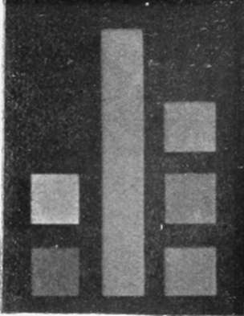
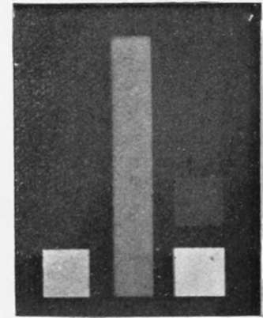
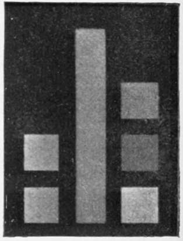
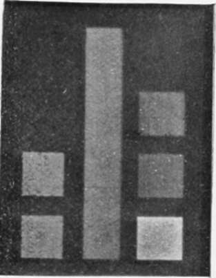

Orthochromatic Plates And Colour Screens. Part 2
Description
This section is from the book "The Barnet Book Of Photography", by Herts Barnet. Also available from Amazon: The Barnet Book Of Photography.
Orthochromatic Plates And Colour Screens. Part 2
The reader is of course aware, as a matter of general knowledge, that each colour in the spectrum is complementary to some other—thus violet and yellow are complementary to each other, blue and orange the same, and green and red. A yellow screen permits very little violet to pass through it, the deeper the yellow the less the violet, and if a proportion of blue is added a portion of the orange will also be cut off. It is evident, then, that to reduce the activity of the violet and blue rays upon the plate we may employ an orange-yellow screen. Those who possess or have access to a spectroscope will find it interesting to note the effect of holding between it and the source of light different tints of transparent colour. As, however, the effect on the plate is not the same as upon the eye we must test the screens by actual exposures, and the spectroscope need not be employed.
We must have, however, some coloured objects to act as tests, and we cannot do better than follow the instructions given by Sir William Abney. He suggests five colour patches, but with the plate we are using three of these, yellow, green, and blue, will be sufficient, and the materials can be obtained from most workers in stained glass. The colours wanted are yellow (silver stained is the best) chromium green, signal green (blue shade) and cobalt blue. Pieces half an inch square are large enough. They are to be arranged side by side on a bit of ground glass, separated and surrounded by black paper, which will hold them in position. The yellow stands alone. One piece of chromium green and one of signal green are superimposed for the green, and one of cobalt blue is superimposed on one of signal green for the blue. It is then necessary to bring them to equal visual brightness by covering the brightest with little pieces of celluloid film which have been developed to a grey tint. This graduating is the most difficult part of the work. The figures which accompany this article were made by a Chapman Jones Plate tester, a most useful instrument.
A different form of colour patch, also recommended by Sir William Abney, may be more easily made by the photographer. Pieces of cardboard are painted with chrome yellow, emerald green, and French ultramarine blue. A little lamp-black is also wanted to bring the colours to the same visual brightness or dulness. The colours may be bought in the powder form from any colourman. A little gum or size is mixed with the blue, and it is painted quite thickly on the card, another piece of card is painted with the green, to which sufficient black has been added to bring it to the same shade as the blue; the yellow is darkened in the same way. As the colours dry lighter than they are when wet, it is not easy to judge the exact shade while they are moist, and it is well to paint quite a number of pieces of card with each colour, adding a little black each time, and from these it will not be difficult to make a selection. I may say that although I have not made a set of the glass patches, I have made and used satisfactorily the painted patches. They may be arranged side by side on a piece of white or black card, and are copied in the camera in the same way that any other design is photographed, and different screens must be tried till the desired effect is obtained.
Lest it should be supposed from the above, and from what is to follow, that the use of orthochromatic plates is beyond the skill of the average worker, it may be pointed out that while it is desirable that everyone should understand as much as possible about the principles of colour work, and even at some sacrifice to carry out the operations here suggested, yet better work can be done with them with the most primitive apparatus than with ordinary plates, and I have endeavoured to state the methods of making the screens in such a manner that good results may be secured in the absence of the colour patches described above.
Before proceeding to a description of the means by which the colour screens are made and tested, it will be well to examine and compare Figs, i, 2, 3 and 4. Fig. 1 is from a negative made on a Barnet orthochromatic plate through a Chapman Jones plate-tester, in which the upright strip is grey, the lowest square on the right hand side is blue, the next higher is green, and that at the top is yellow. With a suitable screen all four ought to be equally dark, and it will be seen that the print is not far from being correct. The squares on the left hand side are used for other purposes, and do not concern us. Fig. 2 is from an ordinary plate, not sensitive to colour, and it will be seen that the blue only is strongly impressed, though there are faint traces of the green. Fig. 3 is from a Barnet orthochromatic (as are all the remaining figures) exposed without a screen, and exhibits a great advantage over the ordinary plate. Fig, 4 was exposed to candle-light, and is still better, though the green is a little dark and the blue a little too light; still it shows that for some purposes very fair results may be obtained without a screen by photographing by candle-light.
Fig. 1.
Fig. 2.
Fig. 3.
Fig. 4.
We must now consider the actual making of the screens, and although collodion is sometimes used I would suggest that gelatine is easier to manipulate in all ways. The usual method is to make a solution of gelatine, to dye it to the required tint, and then to coat glass with it. When the film is dry another piece of glass is cemented with Canada balsam on top of the first, to preserve the film from injury. I have successfully made screens in this way, but the difficulties when working in a small way are great. A separate solution of gelatine must be made for each tint, it must be filtered, and, above all, the drying is a troublesome matter in the absence of a proper drying cupboard. I am told by my friend Mr. Newton, the Principal of the Bolt Court Technical School, that to ensure the absence of the curious worm-like markings sometimes seen, the conditions must be so arranged that drying shall take five days. To keep the temperature regular for such a time involves the use of apparatus which everyone cannot possess.
Continue to:
- prev: Orthochromatic Plates And Colour Screens
- Table of Contents
- next: Orthochromatic Plates And Colour Screens. Part 3
Tags
paper, print, negative, exposure, lens, development, camera, focus